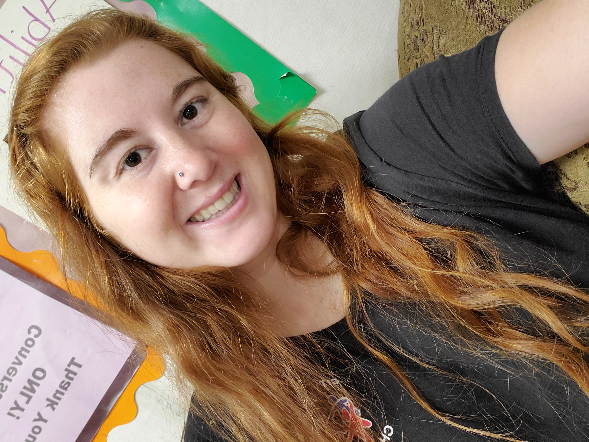

About Me

Hi! My name is Molly. I enjoy learning by building things, especially projects that mix creativity with problem solving. I’m interested in technology and how it can be used to help people. I also like working on hands on assignments where I can see progress quickly, but slow progress is even more satisfying in its own way. In my free time, I enjoy reading, gaming, cooking or baking, and spending time with my pets.
Why I’m Taking This Class
I’m attending this class because I want a strong foundation in building web pages correctly, not just making them "work". I want to learn how to structure content with HTML, style it with CSS, and add interactivity with JavaScript. I’m also taking this course to improve my technical skills for future projects and to feel confident creating clean, accessible pages from scratch.
Technologies for this class
- HTML
- CSS
- JavaScript
Resources
- MDN Web Docs (Mozilla) — Detailed documentation and examples for HTML, CSS, and JavaScript, including browser support notes and best practices.
- W3C Standards and Specs — Official web standards and specifications, plus guidance that helps to understand what valid web code means.